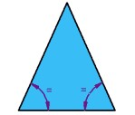

1. La geometría plana estudia aquellos elementos que solo:
- a) Tienen tres dimensiones y se operan en un plano bidimensional.
- b) Tienen tres dimensiones.
- c) Tienen dos dimensiones y se operan en un plano bidimensional.
- d) Ninguna de las anteriores.
2. Los elementos principales de la geometría plana son:
- a) El punto.
- b) La recta.
- c) La circunferencia y otras curvas.
- d) Todas las anteriores.
3. Las unidades de medida de los ángulos son:
- a) Radian y grado.
- b) Litro y metro.
- c) Metro cubico.
- d) Newton.
4. El área es una magnitud escalar definida como:
- a) Medida de extensión de una superficie.
- b) El espacio ocupado por un cuerpo.
- c) El radio de una circunferencia.
- d) El ancho de una figura.
5. Otro nombre que recibe la geometría plana en honor al matemático griego que la trabajo es:
- a) Geometría de Newton.
- b) Geometría tridimensional.
- c) Geometría Euclidea.
- d) Geometría espacial.
6. Los triángulos se pueden clasificar:
I. Según la magnitud de sus lados, II. Según la magnitud de sus ángulos, III. Según la cantidad de lados y IV. Según su forma.- a) I y III son verdaderas.
- b) Solo I es verdadera, las demás son falsas.
- c) III Y IV son verdaderas.
- d) I Y II son verdaderas.
7. Los ángulos según la amplitud de giro que demarque pueden ser:
I. Agudos y obtusos, II. Grandes y pequeños, III. Llano y recto y IV. Anchos y angostos.- a) I Y III son verdaderas.
- b) Solo II es verdadera las demás son falsas.
- c) I Y II son verdaderas.
- d) Todas son falsas.
8. Las características de un triángulo equilátero son:
I. Tiene dos de sus lados iguales, II. Todos sus ángulos son desiguales, III. Todos sus lados son iguales y IV. Todos sus ángulos tienen la misma medida.- a) Ninguna es verdadera.
- b) Solo III es verdadera.
- c) III y IV son verdadera.
- d) Todas son verdaderas.
9.

- a) Es un triángulo ya que tiene tres lados.
- b) Es un rectángulo sus lados paralelos son de igual longitud.
- c) Es un cuadrado, todos sus lados tienen igual longitud y sus angulos son rectos.
- d) Ninguna de las anteriores.
10. 
- a) Es un triángulo equilátero, todos sus lados son iguales y sus ángulos miden 60°.
- b) Es un triángulo escaleno, todos sus lados y sus ángulos tienen medidas diferentes.
- c) Es una circunferencia.
- d) Es un triángulo isósceles, dos de sus lados tiene la misma longitud, y dos de sus ángulos tiene la misma medida.